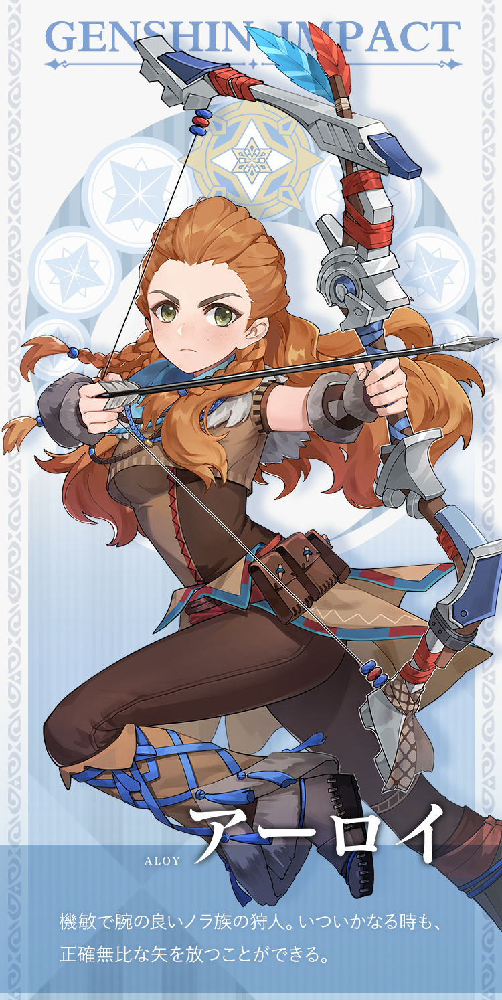

Aloy - Savior From Another World

Aloy is a playable Cryo crossover character in Genshin Impact. She is the heroine from Horizon Zero Dawn and is introduced as a collaboration and crossover character between Guerrilla Games and miHoYo.
Rarity: 5 Stars
Weapon: Bow
Vision: Cryo
Additional Info
Birthday: April 4th
Constelation: Nora Fortis
Region: Unknown
Affiliation: Wandering Heroine
Special Dish: Satiety Gel